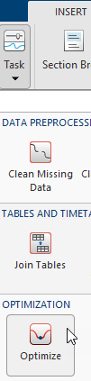
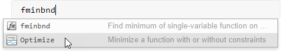
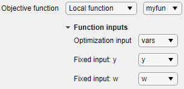

Optimize
Optimize in the Live Editor
Description
The Optimize task lets you interactively optimize a nonlinear objective function or solve a nonlinear equation. The task automatically generates MATLAB® code for your live script.
Using this task, you can:
Specify the objective function, either by writing a function or browsing for a function.
Specify solver options.
Run the optimization.
If you have Optimization Toolbox™ or Global Optimization Toolbox you can solve more problem types using the Optimize task, such as solve a system of nonlinear equations or optimize an objective function with nonlinear constraints. For general information about Live Editor tasks, see Add Interactive Tasks to a Live Script.

Open the Task
To add the Optimize task to a live script in the MATLAB Editor, on the Live Editor Insert tab, select Task > Optimize.

Alternatively, in a code block in the script, type a relevant keyword, such as
fminbnd. Select Optimize from the suggested
command completions.

Parameters
Tips
For functions with extra inputs, Optimize requires you to choose the optimization variable, and to specify which workspace variables contain the fixed data inputs. This example contains three function inputs:

Optimize generates code only after you specify all function inputs.
Optimize cannot parse a function containing the
varargininput or a function that contains an error.If you select an objective function from a file, Optimize adds the file location to your MATLAB path.
If Optimize has a parsing error or if multiple local functions have the same name, the list of available local functions is empty.
Version History
Introduced in R2020b